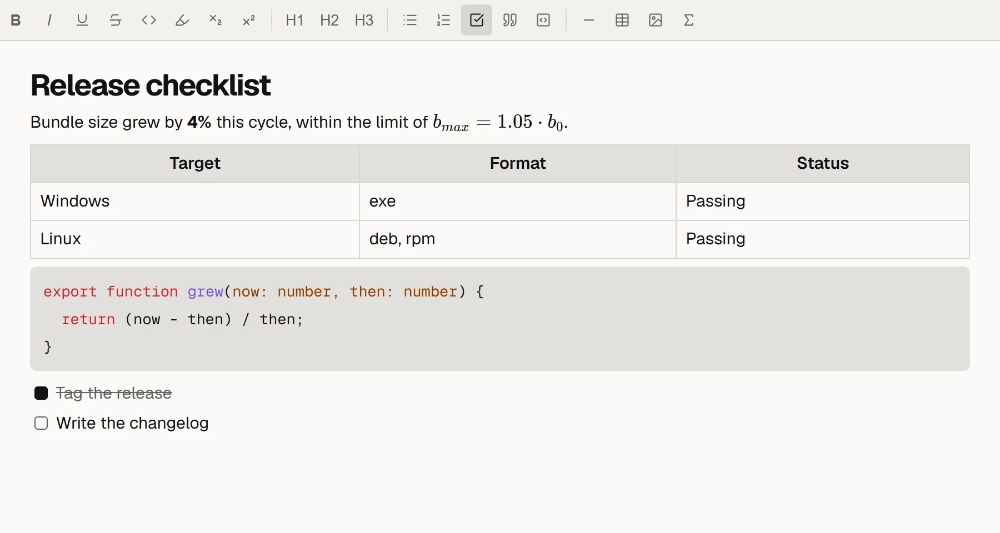
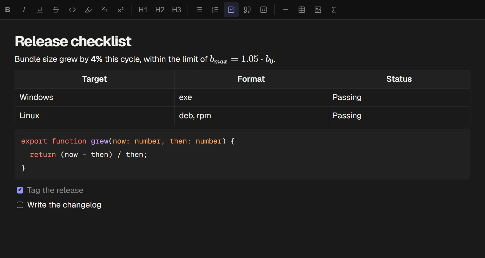
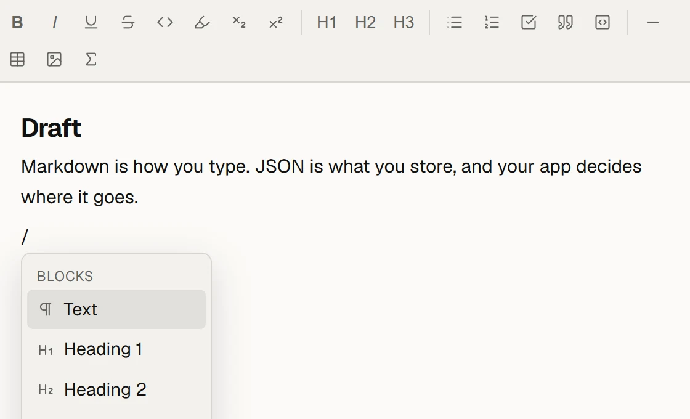
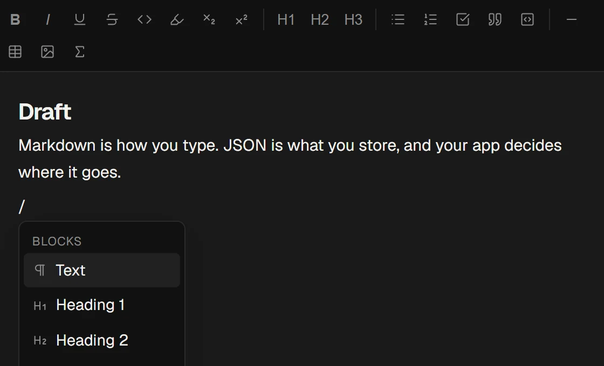
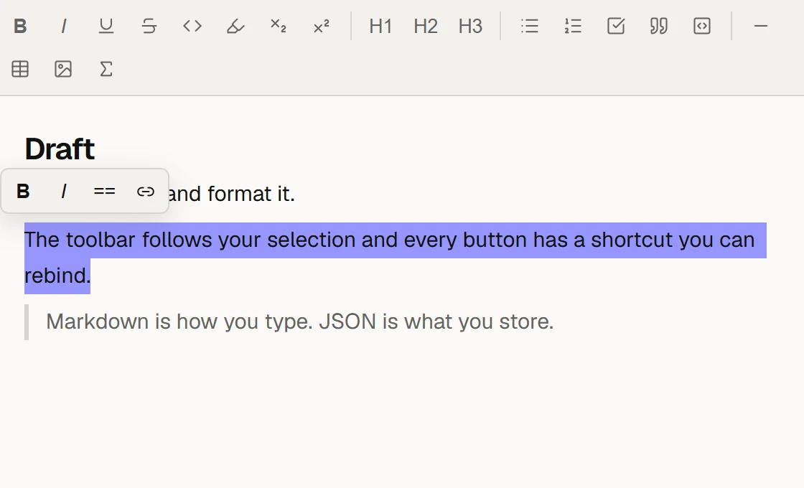
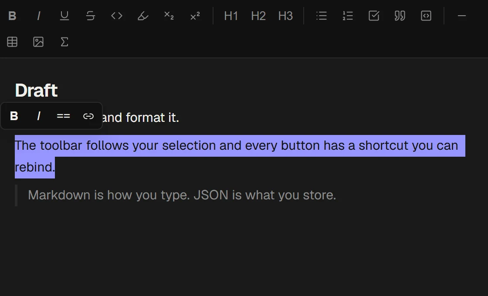

Built on Tiptap 3. Type **bold** and you get bold. Documents are plain JSON, and your app plugs in through one adapter object.
npm i shuttle-editor
Markdown disappears as you type.
Headings, bold, lists, quotes, code and maths all come from the keyboard. Your document never holds the syntax. Paste markdown in, copy markdown out.
Launch notes
Decide the date this week
Book the room
Ship it on a Tuesday.
npm publish after lunch
Every block has an id.
In notepad mode each block gets a drag handle and a menu. Its id stays with it when it moves, so tags, comments and links in your app stay attached. Note and notepad share one schema, so documents switch modes untouched.
Open questions
pT3x9aThe first draft goes out on Friday, with the charts from last week.
Kw0mZrFeedback is due by the end of the month.
c8LqVdThe parts you would otherwise build.
A slash menu, a selection toolbar, tables, maths with KaTeX, and every shortcut rebindable.




/ for the block menu.

Try it.
This is the published package, running in this page. The JSON pane shows what onChange gives your app.
The JSON appears when the editor loads.Quick start.
createFakeHost() is an in-memory host with three sample notes. Start with it, then write your own.
npm install shuttle-editor react react-dom katex yjsimport { useState } from 'react';
import { ShuttleEditor, createFakeHost, type JSONContent } from 'shuttle-editor';
import 'shuttle-editor/styles.css';
const host = createFakeHost();
export function Demo() {
const [doc, setDoc] = useState<JSONContent | null>(null);
return (
<ShuttleEditor docKey="demo" doc={doc} mode="notepad" host={host}
onChange={(_key, next) => setDoc(next)} />
);
}doc is read only when docKey changes. After that the editor owns the content and reports it through onChange, debounced. Also on GitHub Packages as @cord-note/shuttle.
Your app is one object.
Shuttle knows nothing about where documents live. Everything it needs comes through ShuttleHost.
const host: ShuttleHost = {
// Lookups
searchNotes, findNoteByTitle, listNoteTitles,
listBlocks, resolveBlock, resolveFileSrc,
// Side effects
uploadFile, openNote, onLinksChanged,
onFragmentLinksRemoved, onFragmentAction, log,
// Settings
keybindings: {},
};Pass a new host object when your list of documents changes. Shuttle refreshes what it derives from the host when the object's identity changes. To read stored documents on a server, shuttle-editor/doc works without React, Tiptap or a DOM.
Ten CSS variables.
Set them on any parent. The editor itself is transparent, so it takes your app's background.
.my-app {
--accent: #bb9af7;
--on-accent: #1a1b26;
--bg-primary: #1a1b26;
--bg-secondary: #24283b;
--border: #33384d;
--text-primary: #c0caf5;
--text-muted: #737aa2;
--link-color: #7aa2f7;
--editor-font-size: 16px;
--font-mono: 'Geist Mono', monospace;
}Included.
- Text
- Headings, lists, task lists, quotes, code blocks with highlighting, highlight, subscript and superscript.
- Structure
- Tables, toggles, inline and display maths, a heading outline, find and replace.
- Media
- Images by paste, drop or slash menu, stored wherever your app puts them. YouTube and Twitch embeds from a pasted link.
- Links
- Wiki links with
[[, unlinked mention highlighting, and read-only embeds of a block from another document. - Collaboration
- Pass a
Y.Docasydocto edit it directly. Sync is yours to wire up. - Storage
- Tiptap JSON. A document that doesn't fit the schema opens read-only and is never overwritten.
- Licence
- AGPL-3.0-or-later. Check that it suits your project before you ship with it.
Shuttle runs in Cord.
Cord is the desktop notes app Shuttle was written for, and its first user. Its host is about a hundred lines, most of it forwarding calls to the app's backend.
npm i shuttle-editor